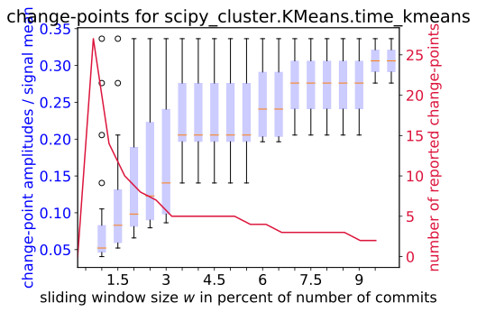
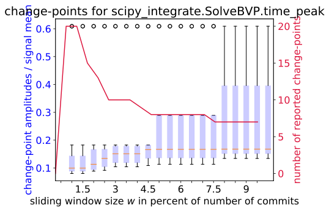
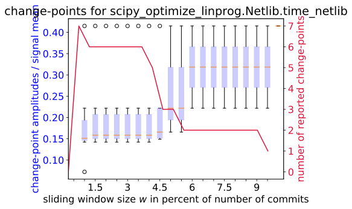
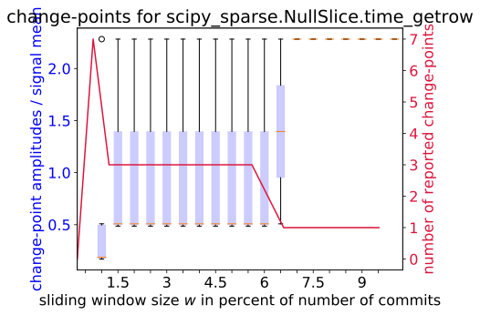
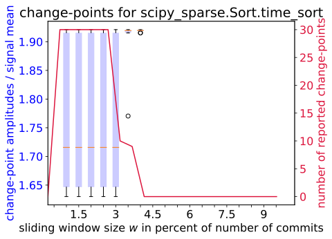
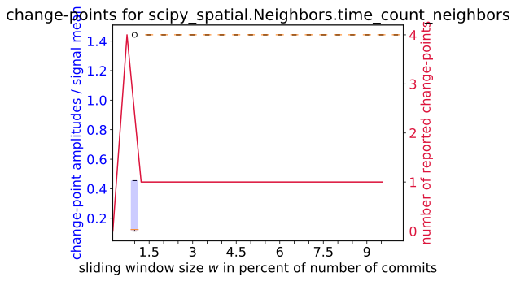
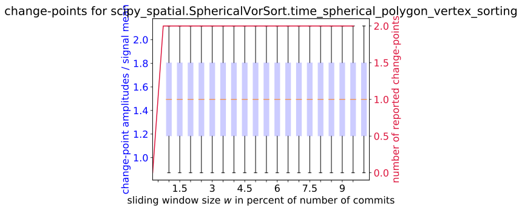

Variant / Benchmark:
scipy_blas_lapack.GetBlasLapackFuncs.time_find_best_blas_type
scipy_cluster.HierarchyLinkage.time_linkage
scipy_cluster.KMeans.time_kmeans
scipy_cluster.KMeans.time_kmeans2
scipy_cluster.VQ.time_vq
scipy_cython_special.CythonSpecial.time_airy_D
scipy_cython_special.CythonSpecial.time_airy_d
scipy_cython_special.CythonSpecial.time_beta_dd
scipy_cython_special.CythonSpecial.time_erf_D
scipy_cython_special.CythonSpecial.time_erf_d
scipy_cython_special.CythonSpecial.time_exprel_d
scipy_cython_special.CythonSpecial.time_gamma_D
scipy_cython_special.CythonSpecial.time_gamma_d
scipy_cython_special.CythonSpecial.time_jv_dD
scipy_cython_special.CythonSpecial.time_jv_dd
scipy_cython_special.CythonSpecial.time_loggamma_D
scipy_cython_special.CythonSpecial.time_logit_d
scipy_cython_special.CythonSpecial.time_psi_D
scipy_cython_special.CythonSpecial.time_psi_d
scipy_fftpack_basic.Fft.time_fft
scipy_fftpack_basic.Fft.time_ifft
scipy_fftpack_basic.Fftn.time_fftn
scipy_fftpack_basic.RFft.time_irfft
scipy_fftpack_basic.RFft.time_rfft
scipy_fftpack_pseudo_diffs.Bench.time_diff
scipy_fftpack_pseudo_diffs.Bench.time_hilbert
scipy_fftpack_pseudo_diffs.Bench.time_shift
scipy_fftpack_pseudo_diffs.Bench.time_tilbert
scipy_integrate.Quad.time_quad_cffi
scipy_integrate.Quad.time_quad_ctypes
scipy_integrate.Quad.time_quad_cython
scipy_integrate.Quad.time_quad_python
scipy_integrate.SolveBVP.time_flow
scipy_integrate.SolveBVP.time_gas
scipy_integrate.SolveBVP.time_peak
scipy_interpolate.BenchPPoly.time_evaluation
scipy_interpolate.BivariateSpline.time_lsq_bivariate_spline
scipy_interpolate.BivariateSpline.time_smooth_bivariate_spline
scipy_interpolate.GridData.time_evaluation
scipy_interpolate.Interpolate.time_interpolate
scipy_interpolate.Interpolate1d.time_interpolate
scipy_interpolate.Interpolate1d.time_interpolate_eval
scipy_interpolate.Interpolate2d.time_interpolate
scipy_interpolate.Leaks.track_leaks
scipy_interpolate.Rbf.time_rbf_1d
scipy_interpolate.Rbf.time_rbf_2d
scipy_interpolate.UnivariateSpline.time_univariate_spline
scipy_io_matlab.MemUsage.track_loadmat
scipy_io_matlab.MemUsage.track_savemat
scipy_io_matlab.StructArr.time_loadmat
scipy_io_matlab.StructArr.time_savemat
scipy_linalg.Bench.time_det
scipy_linalg.Bench.time_eigvals
scipy_linalg.Bench.time_inv
scipy_linalg.Bench.time_solve
scipy_linalg.Bench.time_svd
scipy_linalg.Lstsq.time_lstsq
scipy_linalg.Norm.time_1_norm
scipy_linalg.Norm.time_frobenius_norm
scipy_linalg.Norm.time_inf_norm
scipy_linalg.SpecialMatrices.time_block_diag_big
scipy_linalg.SpecialMatrices.time_block_diag_small
scipy_linalg.SpecialMatrices.time_circulant
scipy_linalg.SpecialMatrices.time_companion
scipy_linalg.SpecialMatrices.time_dft
scipy_linalg.SpecialMatrices.time_hadamard
scipy_linalg.SpecialMatrices.time_hankel
scipy_linalg.SpecialMatrices.time_helmert
scipy_linalg.SpecialMatrices.time_hilbert
scipy_linalg.SpecialMatrices.time_invhilbert
scipy_linalg.SpecialMatrices.time_invpascal
scipy_linalg.SpecialMatrices.time_leslie
scipy_linalg.SpecialMatrices.time_pascal
scipy_linalg.SpecialMatrices.time_toeplitz
scipy_linalg.SpecialMatrices.time_tri
scipy_linalg_solve_toeplitz.SolveToeplitz.time_solve_toeplitz
scipy_linalg_sqrtm.Sqrtm.time_sqrtm
scipy_optimize.BenchGlobal.track_all
scipy_optimize.BenchLeastSquares.track_all
scipy_optimize.BenchSmoothUnbounded.track_all
scipy_optimize_linprog.KleeMinty.time_klee_minty
scipy_optimize_linprog.LpGen.time_lpgen
scipy_optimize_linprog.Netlib.time_netlib
scipy_optimize_zeros.Newton.time_newton
scipy_optimize_zeros.NewtonArray.time_array_newton
scipy_optimize_zeros.Zeros.time_zeros
scipy_peak_finding.FindPeaks.time_find_peaks
scipy_peak_finding.PeakProminences.time_peak_prominences
scipy_peak_finding.PeakWidths.time_peak_widths
scipy_signal.CalculateWindowedFFT.time_coherence
scipy_signal.CalculateWindowedFFT.time_csd
scipy_signal.CalculateWindowedFFT.time_periodogram
scipy_signal.CalculateWindowedFFT.time_spectrogram
scipy_signal.CalculateWindowedFFT.time_welch
scipy_signal.Convolve.time_convolve
scipy_signal.Convolve.time_convolve2d
scipy_signal.Convolve.time_correlate
scipy_signal.Convolve.time_correlate2d
scipy_signal.Convolve2D.time_convolve2d
scipy_signal.Convolve2D.time_correlate2d
scipy_signal.FFTConvolve.time_convolve2d
scipy_signal.LTI.time_bode
scipy_signal.LTI.time_impulse
scipy_signal.LTI.time_lsim
scipy_signal.LTI.time_lsim2
scipy_signal.LTI.time_step
scipy_signal.Upfirdn1D.time_upfirdn1d
scipy_signal.Upfirdn2D.time_upfirdn2d
scipy_signal_filtering.Decimate.time_decimate
scipy_signal_filtering.Lfilter.time_lfilter
scipy_sparse.Arithmetic.time_arithmetic
scipy_sparse.Construction.time_construction
scipy_sparse.Conversion.time_conversion
scipy_sparse.Densify.time_toarray
scipy_sparse.Diagonal.time_diagonal
scipy_sparse.Getset.time_fancy_getitem
scipy_sparse.Getset.track_fancy_getitem
scipy_sparse.Getset.track_fancy_setitem
scipy_sparse.Iteration.time_iteration
scipy_sparse.Matmul.time_large
scipy_sparse.Matvec.time_matvec
scipy_sparse.Matvecs.time_matvecs
scipy_sparse.NullSlice.time_10000_rows
scipy_sparse.NullSlice.time_100_cols
scipy_sparse.NullSlice.time_3_cols
scipy_sparse.NullSlice.time_3_rows
scipy_sparse.NullSlice.time_getcol
scipy_sparse.NullSlice.time_getrow
scipy_sparse.Random.time_rand
scipy_sparse.Sort.time_sort
scipy_sparse.Sum.time_sum
scipy_sparse.Sum.time_sum_axis0
scipy_sparse.Sum.time_sum_axis1
scipy_sparse_csgraph.Laplacian.time_laplacian
scipy_sparse_linalg_expm.Expm.time_expm
scipy_sparse_linalg_expm.ExpmMultiply.time_expm_multiply
scipy_sparse_linalg_lobpcg.Bench.time_mikota
scipy_sparse_linalg_lobpcg.Bench.time_sakurai
scipy_sparse_linalg_onenormest.BenchmarkOneNormEst.time_onenormest
scipy_sparse_linalg_solve.Bench.time_cg
scipy_sparse_linalg_solve.Bench.time_solve
scipy_sparse_linalg_solve.Bench.time_spsolve
scipy_sparse_linalg_solve.Lgmres.time_inner
scipy_spatial.Build.time_build
scipy_spatial.CNeighbors.time_count_neighbors_deep
scipy_spatial.CNeighbors.time_count_neighbors_shallow
scipy_spatial.Cdist.time_cdist
scipy_spatial.ConvexHullBench.time_convex_hull
scipy_spatial.Hausdorff.time_directed_hausdorff
scipy_spatial.Neighbors.time_count_neighbors
scipy_spatial.Neighbors.time_sparse_distance_matrix
scipy_spatial.Query.time_query
scipy_spatial.Radius.time_query_ball_point
scipy_spatial.Radius.time_query_ball_point_nosort
scipy_spatial.Radius.time_query_pairs
scipy_spatial.SphericalVor.time_spherical_voronoi_calculation
scipy_spatial.SphericalVorSort.time_spherical_polygon_vertex_sorting
scipy_spatial.VoronoiBench.time_voronoi_calculation
scipy_spatial.Xdist.time_cdist
scipy_spatial.Xdist.time_pdist
scipy_special.Airy.time_ai_zeros
scipy_special.Airy.time_bi_zeros
scipy_special.Comb.time_comb_exact
scipy_special.Comb.time_comb_float
scipy_special.Erf.time_real
scipy_special.Expn.time_expn_large_n
scipy_special.Loggamma.time_loggamma_asymptotic
scipy_stats.Anderson_KSamp.time_anderson_ksamp
scipy_stats.CorrelationFunctions.time_fisher_exact
scipy_stats.DescriptiveStats.time_mode
scipy_stats.Distribution.time_distribution
scipy_stats.GaussianKDE.time_gaussian_kde_evaluate_few_points
scipy_stats.GaussianKDE.time_gaussian_kde_evaluate_many_points
scipy_stats.InferentialStats.time_ttest_ind_diff_var
scipy_stats.InferentialStats.time_ttest_ind_same_var






